공조냉동기계기사(구) (2008-05-11 기출문제)
1과목: 기계열역학
1. 다음 그림과 같은 랭킨 사이클에서 각 점의 엔탈피(kJ/kg)가 각각 i1 = 800, i2 = 350, i3 = 50, i4 = 200이다. 이 사이클의 효율은 얼마인가?
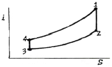
- 20%
- 30%
- 40%
- 50%
(정답률: 50%)

2. 이상 재열사이클과 단순 랭킨사이클을 비교한 설명으로 틀린 것은?
- 이상 재열사이클의 열효율이 더 높다.
- 이상 재열사이클의 경우 터빈 출구 건도가 증가한다.
- 이상 재열사이클의 기기 비용이 더 많이 요구된다.
- 이상 재열사이클의 경우 터빈 입구 온도를 더 높일 수 있다.
(정답률: 41%)
3. 이상기체의 압력(P), 체적(V)의 관계식 "PVn = 일정"에서 가역단열과정을 표시하는 n 의 값은? (단, Cp는 정압비열, Cv는 정적비열이다.)
- 0
- 1
- 정압비역과 정적비열의 비(Cp/Cv)
- 무한대
(정답률: 65%)
4. 다음 그림과 같이 다수의 추를 올려놓은 피스톤이 끼워져 있는 실린더에 들어 있는 가스를 계로 생각한다. 초기 압력이 300 kPa 이고, 초기 체적은 0.⑤ m3이다. 열을 가하여 압력을 일정하게 유지시키고 가스의 체적을 0.2m3으로 증가시킬 때 계가 한 일은?
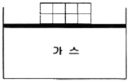
- 30 kJ
- 35 kJ
- 40 kJ
- 45 kJ
(정답률: 60%)
5. 온도가 보기와 같은 4개의 열원(Heat Source)에서 100kJ의 열을 방출하였을 때 이 열원의 엔트로피가 가장 적게 감소하는 것은?
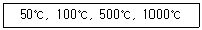
- 50℃
- 100℃
- 500℃
- 1000℃
(정답률: 49%)
6. 환산 온도(Tr)와 환산 압력(Pr)을 이용하여 나타낸 다음과 같은 상태방정식이 있다. 어떤 물질의 기체상수가 0.189 kJ/kgK, 임계온도가 3⑤K 임계압력이 7380 kPa이다. 이 물질의 비체적을 위의 방정식을 이용하여 20℃, 1000kPa 상태에서 구하면?
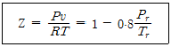
- 0.0111 m3/kg
- 0.0303 m3/kg
- 0.0492 m3/kg
- 0.⑤54 m3/kg
(정답률: 41%)
7. 다음 중 순수물질이 아닌 것은?
- 포화상태의 물
- 물과 수증기의 혼합물
- 얼음과 물의 혼합물
- 액체 공기와 기체 공기의 혼합물
(정답률: 59%)
8. R-12를 작동 유체로 사용하는 이상적인 증기압축냉동 사이클이 있다. 이 사이클은 증발기에서 104.08kJ/kg의 열을 흡수하고, 응축기에서 136.85 kJ/kg의 열을 방출한다고 한다. 이 사이클의 냉동 성능계수는?
- 0.31
- 1.31
- 3.18
- 4.17
(정답률: 50%)
9. 두께가 10cm 이고, 내∙외측 표면온도가 20℃, -5℃인 벽이 있다. 정상상태일 때 벽의 중심온도는 몇 ℃인가?
- 4.5
- 5.5
- 7.5
- 12.5
(정답률: 60%)
10. 다음 그림은 증기 압축 냉동 사이클의 온도-엔트로피 선도이다. 이 그림에서 냉동기의 응축기에 해당하는 과정은?
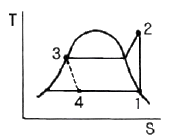
- 과정 1 - 2
- 과정 2 - 3
- 과정 3 - 4
- 과정 4 - 1
(정답률: 59%)
11. 흑체의 온도가 20℃에서 80℃로 되었다면 방사하는 복사 에너지는 약 몇 배가 되는가?
- 4
- 5
- 1.2
- 2.1
(정답률: 52%)
12. 밀폐용기에 비내부에너지가 200 kJ/kg인 기체 0.5kg이 있다. 이 기체를 용량이 500 W인 전기가열기로 2분 동안 가열한다면 최종상태에서 기체의 내부에너지는? (단, 열량은 기체로만 전달된다고 한다.)
- 20 kJ
- 100 kJ
- 120 kJ
- 160 kJ
(정답률: 43%)
13. 다음 관계식 중 옳은 것은? (단, 여기서 u는 내부에너지, h는 엔탈피, P는 압력, v는 비체적, T는 온도이다.)
- h = u + Pv
- h = u - Tv
- h = u - Pv
- h = u + Tv
(정답률: 67%)
14. 정상과정으로 100kPa, 22℃의 공기를 1 MPa로 압축하는 압축기가 있다. 압축공기 질량 1 kg에 대해 냉각수는 16 kJ의 열을 제거하고 180 kJ의 일이 요구될 때, 압축기 출구 온도는 약 몇 ℃인가? (단, 공기의 비열은 1.04 kJ/kg∙K이다.)
- 210
- 195
- 180
- 170
(정답률: 27%)
15. 어느 열기관이 33 kW의 일을 발생할 때 1시간 동안의 일을 열량으로 환산하면 약 얼마인가?
- 83600 kJ
- 104500 kJ
- 118800 kJ
- 98878 kJ
(정답률: 61%)
16. 카르노 사이클로 작동되는 열기관이 고온체에서 100 kJ의 열을 받아들인다. 이 기관의 열효율이 30%라면 방출되는 열량(kJ)은?
- 30
- 50
- 60
- 70
(정답률: 54%)
17. 어떤 유체의 밀도가 741 kg/m3 이다. 이 유체의 비체적은 몇 m3/kg인가?
- 0.78 × 10-3
- 1.35 × 10-3
- 2.35 × 10-3
- 2.98 × 10-3
(정답률: 58%)
18. 밀폐 시스템의 압력이 P = (5-15V)의 관계에 따라 변한다. 체적(V)이 0.1m3 에서 0.3m3 로 변하는 동안 이 시스템이 하는 일은? (단, P와 V의 단위는 각각 kPa과 m3 이다.)
- 200 J
- 400 J
- 800 J
- 1004 J
(정답률: 34%)
19. 다음 기체 중 기체상수가 가장 큰 것은?
- 수소
- 산소
- 공기
- 질소
(정답률: 62%)
20. 시스템의 열역학적 상태를 기술하는 데 열역학적 상태량(또는 성질)이 사용된다. 다음 중 열역학적 상태량으로 올바르게 짝지어진 것은?
- 열, 일
- 엔탈피, 엔트로피
- 열, 엔탈피
- 일, 엔트로피
(정답률: 56%)
2과목: 냉동공학
21. 응축능력 4500kcal/h, 열통과율 900kcal/m2h℃ 대수 평균온도차가 7℃인 응축기를 설계하고자 한다. 이 응축기의 전열 면적은 얼마로 하면 되는가? (단, 열손실은 생각하지 않는다.)
- 0.71m2
- 0.82m2
- 1.22m2
- 1.45m2
(정답률: 48%)
22. 흡수식 냉동기의 특징 중 틀린 것은?
- 증기열원을 사용할 경우 전력수요가 적다.
- 소음 및 진동이 적다.
- 자동제어가 용이하고 운전경비가 절감된다.
- 증기압축식 냉동기에 비해 예냉시간이 짧다.
(정답률: 58%)
23. 10 냉동톤의 능력을 갖는 역카르노 사이를 냉동기의 방열 온도가 25℃, 흡열 온도가 -20℃이다. 이 냉동기를 운전하기 위하여 필요한 이론 마력은 몇 마력(PS)인가?
- 9.4
- 14.6
- 15.3
- 17.26
(정답률: 48%)
24. 다음 중 압력값이 다른 것은?
- 1mAq
- 73.5559 mmHg
- 980.665 Pa
- 1.42233 lbf/in2
(정답률: 48%)
25. 불응축가스가 냉동기에 미치는 영향에 대한 설명으로 틀린 것은?
- 토출가스 온도의 상승
- 응축압력의 상승
- 체적효율의 증대
- 소요동력의 증대
(정답률: 73%)
26. 다음의 여러 가지 냉동기 중에서 물을 냉매로 사용할 수 있는 것은?
- 흡수식 냉동기
- 증기 압축식 냉동기
- 열전냉동기
- 공기 압축식 냉동기
(정답률: 66%)
27. 다음과 같은 15RT 암모니아 냉동장치의 압축기 운전 소요동력(kW)은 약 얼마인가? (단, 압축기 압축효율 ηc=0.7, 기계효율 ηm=0.9, 1RT= 3320 kcal/h이다.)
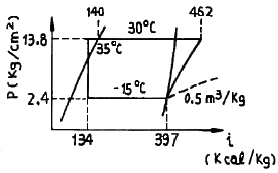
- 24.3
- 22.7
- 16.8
- 11.5
(정답률: 54%)
28. -20℃의 암모니아 포화액의 엔탈피 58kcal/kg, 동 온도의 건조포화 증기의 엔탈피 295.5kcal/kg, 팽창밸브 직전의 액의 엔탈피는 86kcal/kg이다. 이 냉매액이 팽창밸브를 통과하여 증발기에 들어갈 때 일부는 증기로 되고 나머지는 액이 될 경우에 액은 중량비로 나타내면 대략 몇 %가 되는가?
- 11.8%
- 34.3%
- 65.3%
- 88.2%
(정답률: 36%)
29. 증기 압축식 냉동법에 적용되고 있는 원리의 설명으로 틀린 것은?
- 물질이 저온으로 되는 것은 그 물질로부터 열이 빼앗기기 때문이다.
- 냉각시키는데 필요한 온도는 증발한 액체의 압력을 올리게 되면 저온이 얻어진다.
- 증발한 기체는 외부로 열을 방출한다.
- 물질의 열을 제거하는 데는 그 물질보다 낮은 온도의 물체를 접촉시키면 된다.
(정답률: 46%)
30. 다음은 냉동장치에 사용되는 자동제어기기에 대하여 설명한 것이다. 이 중 옳은 것은?
- 고압 차단 스위치는 토출압력이 이상 저압이 되었을 때 작동하는 스위치이다.
- 온도조절스위치는 냉장고 등의 온도가 일정범위가 되도록 작용하는 스위치이다.
- 저압 차단 스위치(정지용)는 냉동기의 고압측 압력이 너무 저하 하였을 때 차단하는 스위치이다.
- 유압 보호 스위치는 유압이 올라간 경우에 유압을 내리기 위한 스위치이다.
(정답률: 65%)
31. 다음 내용은 브라인에 대한 설명이다. 틀린 것은?
- 브라인은 농도가 진하게 될수록 부식성이 크다.
- 염화칼슘 브라인은 동결점이 매우 낮으며 부식성도 비교적 적다.
- 염화나트륨 브라인은 염화칼슘 브라인에 비해 동결 온도는 아주 높고 금속 재료에 대한 부식성도 크다.
- 브라인에 대한 부식 방지를 위해서는 밀폐 순환식을 채용하여 공기에 접촉하지 않게 해야한다.
(정답률: 52%)
32. 냉동장치가 정상적으로 운전되고 있을 때 옳은 설명은?
- 평창밸브 직후의 온도는 직전의 온도보다 높다.
- 크랭크 케이스 내의 유온은 증발온도보다 낮다.
- 수액기 내의 액온은 응축온도보다 높다
- 응축기의 냉각수 출구온도는 응축온도보다 낮다.
(정답률: 67%)
33. 피스톤 압출량이 320 m3/h인 압축기가 다음 표와 같은 조건으로 단열 압축 운전되고 있을 때 토출가스의 엔탈피는 446.8 kcal/kg이었다. 이 압축기의 소요동력(kW)은 약 얼마인가?
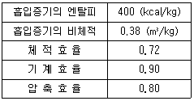
- 32.9
- 37.4
- 45.8
- 48.6
(정답률: 46%)
34. 냉동장치의 운전에 관한 다음 설명 중 맞는 것은?
- 압축기에 액백(liquid back)현상이 일어나면 토출가스 온도가 내려가고 구동 전동기의 전류계 지시값이 변동한다.
- 수액기내에 냉매액을 충만시키면 증발기에서 열부하 감소에 대응하기 쉽다.
- 냉매 충전량이 부족하면 증발 압력이 높게 되어 냉동능력이 저하한다.
- 냉동부하에 비해 과대한 용량의 압축기를 사용하면 저압이 높게 되고, 장치의 성적계수는 상승한다.
(정답률: 52%)
35. 증발관의 길이가 너무 길거나, 관 길이에 대하여 부하가 과대한 경우 증발관 내의 압력 강하가 커져서 과열도가 설정치가 되어도 밸브가 열리지 않게 되며 능력이 부족해서 과열을 증가시킨다. 이 현상을 방지하기 위하여 사용되는 팽창 밸브는?
- 내부 균압형 자동 팽창밸브
- 외부 균압형 자동 팽창밸브
- 액면 제어용 감온 자동 팽창밸브
- 부자식 자동 팽창밸브
(정답률: 52%)
36. 다음 전열에 관한 설명 중 틀린 것은?
- 대류는 유체의 흐름에 의해서 일어나는 현상이다.
- 열전도는 고체내에서의 열이동 방법으로 물체는 움직이지 않고 그 물체의 구성분자간에 정지상태에서 열이 이동하는 현상이다.
- 태양과 지구사이의 전열은 복사현상이다.
- 전열에서는 전도, 대류, 복사가 각각 단독으로 일어난다.
(정답률: 65%)
37. 열펌프(heat pump)의 특징 설명이 틀린 것은?
- 성적계수가 1보다 작다.
- 하나의 장치로 난방 및 냉방으로 사용할 수 있다.
- 증발온도가 높고 응축온도가 낮을수록 성적계수가 커진다.
- 대기오염이 없고 설치공간을 절약할 수 있다.
(정답률: 67%)
38. 냉동장치의 제상에 대한 설명 중 맞는 것은?
- 제상은 증발기의 성능 저하를 막기 위해 행해진다.
- 증발기에 착상이 심해지면 냉매 증발압력은 높아진다.
- 살수식 제상 장치에 사용되는 일반적인 수온은 50~80℃로 한다.
- 핫가스 제상이라 함은 뜨거운 수증기를 이용하는 것이다.
(정답률: 53%)
39. 다음 냉매 중 가연성이 있는 냉매는?
- R - 717
- R - 744
- R - 718
- R - 502
(정답률: 59%)
40. 일반적으로 급속동결이라하면 동결속도가 몇 cm/h이상인 것을 말하는가?
- 0.01~0.03
- 0.⑤~0.08
- 0.1~0.3
- 0.6~2.5
(정답률: 46%)
3과목: 공기조화
41. 다음 중 건물의 지하실, 대규모 조리장, 세탁실 등에 가장 적합한 기계환기법(강제급기+강제배기)은?
- 제 1종 환기
- 제 2종 환기
- 제 3종 환기
- 제 4종 환기
(정답률: 67%)
42. 다음 중 사용되는 공기선도가 아닌 것은? (단, i : 엔탈피,
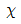
: 절대습도, t: 온도, p: 압력)- I-
 선도
선도 - t-
 선도
선도 - t-i 선도
- p-i 선도
(정답률: 58%)
43. 한 장의 보통 유리를 통해서 들어오는 취득열량을 q=IGR × Ks × Ag + IGC × Ag 라 할 때 Ks를 무엇이라 하는가? (단, IGR : 일사투과량, Ag : 유리의 면적, IGC : 창면적당의 내표면으로부터 대류에 의하여 침입하는 열량)
- 유리의 열전도 계수
- 차폐계수
- 단위시간에 단위면적을 통해 투과하는 열량
- 유리의 반사율
(정답률: 72%)
44. 에어워셔에 대한 기술로써 옳지 않은 것은?
- 세정실(Spray chamber)은 엘리미네이터에 있어 공기를 세정한다.
- 분무노즐(Spray nozzle)은 스탠드파이프에 부착되어 스프레이 헤더에 연결된다.
- 플러딩 노즐(Flooding nozzle)은 진애(塵埃)를 세정한다.
- 다공판 또는 루버(Louver)는 기류를 정류해서 세정실내를 통과시키기 위한 것이다.
(정답률: 59%)
45. 다음 중 병원 수술실의 공기조화시 가장 중요시 해야 할 사항은?
- 온도, 압력조건
- 공기의 청정도
- 기류속도
- 소음
(정답률: 66%)
46. 다음 중 수관식 보일러의 단점으로 틀린 것은?
- 스케일로 인해 수관이 과열되기 쉬우므로 수 관리를 철저히 하여야 한다.
- 구조가 복잡하여 청소와 보수가 어렵고 가격이 비싸다.
- 용량에 비해 중량이며 효율이 나쁘고 설치가 어렵다.
- 부하변동에 따른 압력변화가 크다.
(정답률: 52%)
47. 상대습도가 낮을 때 일어나는 현상이 아닌 것은?
- 정전기가 발생한다.
- 공기 중 인플루엔자 바이러스의 생존율이 높아진다.
- 곰팡이가 나기 쉽다.
- 피부가 거칠어진다.
(정답률: 70%)
48. 다음 중 바이패스 팩터가 가장 커지는 경우는?
- 송풍량이 적고, 코일의 전(前)면적이 큰 경우
- 코일의 열수가 많고, 코일의 표(表)면적이 큰 경우
- 송풍량이 많고, 코일의 표(表)면적이 적은 경우
- 코일의 외표면 열전달률이 크고, 코일 표(表)면적이 큰 경우
(정답률: 52%)
49. 다음은 공기조화 방식 중에서 어느 방식에 해당하는 방식인가?
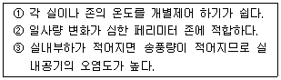
- 정풍량 단일덕트 방식
- 변풍량 단일덕트 방식
- 패키지방식
- 유인유닛방식
(정답률: 58%)
50. 대기압(760mmHg)에서 온도 28°C, 상대습도 50%인 습공기내의 건공기의 분압(mmHg)은 약 얼마인가? (단, 수증기 포화압력은 31.84mmHg 이다.)
- 16
- 32
- 372
- 744
(정답률: 40%)
51. 실내의 용적이 20m3인 사무실에 창문의 틈새로 인한 자연환기회수가 4회/h인 것으로 볼 때, 이 자연환기의 의하여 실내에 들어오는 열량(kcal/h)은 약 얼마인가? (단, 외기온도 30℃, 실온 25℃, 또한 외기 및 실온의 절대 습도는 0.02kg/kg' , 0.015kg/kg' 이다.)
- 116
- 321
- 402
- 556
(정답률: 40%)
52. 다음 중 HEPA 필터의 설치가 요구되는 곳은?
- 방적공장
- 클린 룸
- 제분공장
- 호텔의 주방
(정답률: 72%)
53. 다음 중 증기 사용압력이 가장 낮은 것은?
- 노통 연관 보일러
- 수관 보일러
- 관류 보일러
- 입형 보일러
(정답률: 50%)
54. 자연형 태양열 난방 방식의 종류에 속하지 않는 것은?
- 직접 획득 방식
- 부착 온실 방식
- 공기 방식
- 축열벽 방식
(정답률: 52%)
55. 상당 방열 면적 EDR = Hr/qo (m2)에서 qo는 무엇을 뜻하는가?
- 증발량
- 방열기의 전 방열량
- 응축수량
- 표준 방열량
(정답률: 65%)
56. 실내온도 20°C, 외기온도 5°C인 조건에서, 내벽 열전달계수 5 kcal/m2 h°C, 외벽 열전달계수 15kcal/m2 h°C, 열전도율이 2 kcal/m h°C인 벽두께 10cm인 벽에 의해 실내온도 20°C, 외기온도 5°C로 유지되고 있는 방이 있다. 이 벽체의 열저항(m2 h°C/kcal)은 얼마인가?
- 0.32
- 0.64
- 1.6
- 3.1
(정답률: 33%)
57. 원형덕트에서 사각덕트로 환산시키는 식이 맞는 것은? (단, a는 사각던트의 장변길이, b는 단변길이, d는 원형덕트의 직경 또는 상당직경이다.)
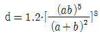
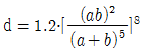
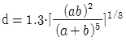
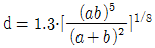
(정답률: 58%)
58. 축열 시스템에서 수축열조의 장점으로 맞는 것은?
- 단열, 방수공사가 필요없고 축열조를 따로 구축하는 경우 추가비용이 소요되지 않는다.
- 축열배관 계통이 여분으로 필요하고 배관설비비 및 반송동력비가 절약된다.
- 축열수의 혼합에 따른 수온저하 때문에 공조기 코일 열수, 2차측 배관계의 설비가 감소할 가능성이 있다.
- 열원기기는 공조부하의 변동에 직접 추종할 필요가 없고 효율이 높은 전부하에서의 연속운전이 가능하다.
(정답률: 49%)
59. 공기조화설비에서 공기의 경로로 옳은 것은?
- 환기덕트 → 공조기 → 급기덕트 → 취출구
- 공조기 → 환기덕트 → 급기덕트 → 취출구
- 냉각탑 → 공조기 → 냉동기 → 취출구
- 공조기 → 냉동기 → 환기덕트 → 취출구
(정답률: 61%)
60. 다음 중 난방부하를 계산할 때 실내 손실열량으로 고려해야 하는 것은?
- 인체에서 발생하는 잠열
- 극간풍에 의한 잠열
- 조명에서 발생하는 현열
- 기기에서 발생하는 현열
(정답률: 62%)
4과목: 전기제어공학
61. 200V의 전원에 접속하여 1kW의 전력을 소비하는 부하를 100V의 전원에 접속하면 소비전력은 몇 [W]가 되겠는가?
- 100W
- 150W
- 200W
- 250W
(정답률: 49%)
62. 다음 중 전류에 의해서 발생 되는 작용이라고 볼 수 없는 것은?
- 발열 작용
- 자기차폐 작용
- 화학 작용
- 자기 작용
(정답률: 57%)
63. 3상 유도전동기의 속도제어방법으로 사용되는 것이 아닌 것은?
- 슬립의 변화에 의한 방법
- 용량의 변화에 의한 방법
- 극수의 변화에 의한 방법
- 주파수의 변화에 의한 방법
(정답률: 34%)
64. 그림에서 부하 RL에 절달되는 최대전력은 몇 [W]인가?
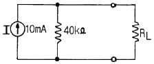
- 1W
- 2W
- 3W
- 4W
(정답률: 28%)
65. 자동제어계의 출력신호를 무엇이라 하는가?
- 조작량
- 목표값
- 제어량
- 동작신호
(정답률: 45%)
66. 입력으로 단위계단함수 u(t)를 가했을 때, 출력이 그림과 같은 조절계의 기본 동작은?
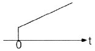
- 2위치 동작
- 비례 동작
- 비례 적분 동작
- 비례 미분 동작
(정답률: 52%)
67. 직류전류의 측정범위를 확대하기 위하여 내부저항이 2Ω인 전류계에 병렬로 0.4Ω의 분류저항을 접속하였다면 몇 배로 측정범위가 확대되는가?
- 2배
- 4배
- 6배
- 8배
(정답률: 33%)
68. 다음 중 그림과 등가인 게이트는?
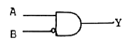
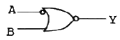
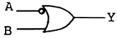
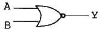
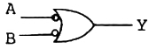
(정답률: 33%)
69. 다음 중 직류기의 전기자반작용에 대한 설명으로 옳지 않은 것은?
- 중성축이 이동한다.
- 전동기는 속도가 저하된다.
- 국부적 섬락이 발생한다.
- 발전기는 기전력이 감소한다.
(정답률: 40%)
70. 다음 논리식 중에서 그 결과가 다른 값을 나타낸것은?
- ( A + B ) ( A +
 )
) - A ㆍ ( A + B )
- A +
 ㆍ B
ㆍ B - A ㆍ B + A ㆍ

(정답률: 45%)
71. 인덕턴스 20mH에 실효값 50V, 60Hz인 정현파 교류전압을 인가하였을 때, 인덕턴스에 축척되는 평균 자기에너지는 약 몇 [J] 인가?
- 0.44J
- 1.44J
- 6.34J
- 63.4J
(정답률: 30%)
72. 그림은 전동기 제어회로의 일부이다. 이 회로의 기능으로 가장 거리가 먼 것은?
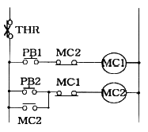
- 자기유지회로
- 인터록회로
- 정ㆍ역 운전회로
- 과부하 정지회로
(정답률: 36%)
73. 제어계에서 제어기의 전달함수가 G(s) =Kp(1+TdS)로 주어질 때 이에 대한 설명으로 옳지 않은 것은?
- 이 제어기는 비례 - 미분 제어기이다.
- 이 제어기는 진상보상요소 이다.
- 이 제어기의 정상편차는 없다.
- Kp는 비례감도, Td는 미분시간을 나타낸다.
(정답률: 45%)
74. 다음 중 변위를 압력으로 변환시키는 요소는?
- 다이어프램
- 노즐 플래퍼
- 전자석
- 벨로우즈
(정답률: 39%)
75. 그림과 같은 접점회로의 논리식으로 옳은 것은?
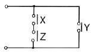
- X ㆍ Y ㆍ Z
- (X + Y) ㆍ Z
- X ㆍ Z + Y
- X + Y + Z
(정답률: 52%)
76. 그림의 신호흐름선도에서 X2/X1를 구하면?
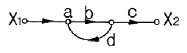
- abc/1-bd
- abc/1+bd
- bd/1-abc
- bd/1+abc
(정답률: 42%)
77. 단상변압기 3대를 △결선하여 3상전원을 공급하다가 1대의 고장으로 인하여 고장난 변압기를 제거하고 V결선으로 바꾸어 전력을 공급할 경우 출력은 당초 전력의 약 몇 [%] 까지 가능하겠는가?
- 46.7%
- 57.7%
- 66.7%
- 86.7%
(정답률: 38%)
78. 디지털 제어의 일종이며, 공작기계를 이용한 제품 가공을 위해 프로그램을 이용하는 제어와 가장 관계 깊은 것은?
- 속도 제어
- 수치 제어
- 공정 제어
- 최적 제어
(정답률: 69%)
79. 전압, 전류, 주파수 등의 양을 주로 제어하는 것으로 응답속도가 빨라야 하는 것이 특징이며, 정전압장치나 발전기 및 조속기의 제어 등에 활용하는 제어방법은?
- 서보제어
- 프로세스제어
- 자동조정제어
- 비율제어
(정답률: 47%)
80. 어떤 코일에 흐르는 전류가 0.01초 사이에서 30A에서 10A로 변할 때 20V의 기전력이 발생한다고 하면 자기 인덕턴스 몇 [mH] 인가?
- 10mH
- 20mH
- 30mH
- 50mH
(정답률: 22%)
5과목: 배관일반
81. 급수펌프에서 발생하는 캐비테이션 현상의 방지법이 아닌 것은?
- 펌프설치 위치를 낮춘다.
- 입형펌프를 사용한다.
- 흡입손실수두를 줄인다.
- 회전수를 올려 흡입속도를 증가시킨다.
(정답률: 45%)
82. 가스배관의 설치요령으로 옳지 않은 것은?
- 배관의 최고사용압력은 중압이하일 것
- 배관은 하천(하천을 횡단하는 경우는 제외한다.) 또는 하수구 등 암거내에 설치할 것
- 지반이 약한 곳에 설치되는 배관은 지반침하에 의하여 배관이 손상되지 아니하도록 필요한 조치를 하고 배관을 설치할 것
- 본관 및 공급관은 건축물의 내부 또는 기초 밑에 설치하지 아니할 것
(정답률: 44%)
83. 배관의 일정방향의 이동과 회전만 구속하고 다른 방향의 이동과 회전은 자유롭게 이동하게 하는 배관지지 금속은 무엇인가?
- 행거
- 가이드
- 앵커
- 스토퍼
(정답률: 26%)
84. 배관관련설비 중 공기조화 설비의 구성요소가 아닌 것은?
- 열원장치
- 공기조화기
- 환기장치
- 트랩장치
(정답률: 54%)
85. 다음 중 난방 또는 급탕설비의 보온 재료로서 부적합한 것은?
- 유리 섬유
- 발포폴리스티렌폼
- 암면
- 규산칼슘
(정답률: 52%)
86. 통기관에 관한 설명으로 틀린 것은?
- 통기관경은 접속하는 배수관경의 1/2 이상으로 한다.
- 통기방식에는 신정통기, 각개통기, 회로통기 방식이 있다.
- 통기관은 트랩내의 봉수를 보호하고 관내 청결을 유지한다.
- 배수입관에서 통기입관의 접속은 90° T이음으로 한다.
(정답률: 53%)
87. 강관작업에서 아래 그림처럼 15A 나사용 90° 엘보2개를 사용하여 길이가 200mm가 되게 연결작업을 하려고 한다. 이때 실제 15A 강관의 길이는 얼마안가? (단, a : 나사가 물리는 최소길이는 11mm, A : 이음쇠의 중심에서 단면까지의 길이는 27mm로 한다.)
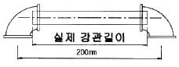
- 142mm
- 158mm
- 168mm
- 176mm
(정답률: 49%)
88. 증기 및 물배관 등에서 찌꺼기를 제거하기 위하여 설치하는 부속품은?
- 유니온
- 피(P)트랩
- 체크 밸브
- 스트레이너
(정답률: 62%)
89. 어느 주택 급탕설비설계 계산결과 1일 최대급탕량이 24850ℓ/d 이었다. 온수의 급탕온도는 60℃이고 급수온도는 5℃ 일 경우 가열기의 소요능력은 몇 kcal/h인가? (단, 이 때 1일 사용량에 대한 가열 능력비율 r은 1/7로 한다.)
- 195250 kcal/h
- 213000 kcal/h
- 1366750 kcal/h
- 1491000 kcal/h
(정답률: 28%)
90. 도시가스 배관을 지하에 매설하는 경우 배관은 그 외면으로부터 수평거리로 건축물까지 몇 m 이상을 유지해야 하는가?
- 1 m
- 1.5 m
- 2 m
- 2.5 m
(정답률: 49%)
91. 급탕량을 산정하는 단계에서 동시사용률이 고려되어야 하는 경우는?
- 재실인원을 기준하여 1인당 1일 급탕량을 산정하는 경우
- 사용인원수에 따르는 경우 주거시설이므로 식기세척기, 세탁기 등을 별도로 산정하는 경우
- 설치된 기구수를 기준하여 급탕량을 산정하는 경우
- 건물의 용도별 바닥면적에 따라 거주인원을 추정하여 산정하는 경우
(정답률: 25%)
92. 급수배관 설계 및 시공상의 주의사항으로 적절하지 못한 것은?
- 수평배관에는 공기나 오물이 정체하지 않도록 한다.
- 주 배관에는 적당한 위치에 플랜지(유니언)를 달아 보수점검에 대비한다.
- 수격작용이 우려되는 곳에는 진공브레이커를 설치한다.
- 음료용 급수관과 다른 용도의 배관을 접속하지 않아야 한다.
(정답률: 55%)
93. 액순환방식의 배관에 대한 설명으로 잘못된 것은?
- 냉매펌프에서 나온 냉매액은 운전 정지 중에 액봉에 의한 파열이 일어나게 되므로 이를 방지하기 위하여 안전밸브를 필요로 한다.
- 저압 수액기로부터 증발기로의 배관은 냉매액의 트랩을 많게하여 압력 손실을 크게 한다.
- 액면에서 냉매펌프로의 낙차는 1.2m 정도를 유지하여 펌프흡입관의 입구저항, 관의 압력손실, 펌프의 흡입압력손실을 보상한다.
- 액펌프 흡입관내의 액유속은 암모니아의 경우 1m/s 이하이지만, 플래시가스의 발생 등을 고려하여 0.9m/s정도 내외로 한다.
(정답률: 39%)
94. 덕트의 단위길이당 마찰저항이 일정하도록 치수를 결정하는 덕트 설계법은?
- 등마찰손실법
- 정속법
- 등온법
- 정압 재 취득법
(정답률: 52%)
95. 다음 중 급탕설비의 배관시공에 관한 설명이 옳은 것은?
- 배관과 기기류와의 접속은 용접에 의해 견고하게 이음한다.
- 보일러, 저탕탱크 및 도피관의 배수는 간접배수로 한다.
- 산형(山形)배관이 되어 공기체류가 우려되는 곳에는 공기실을 설치한다.
- 상향공급식 급탕주관은 내림구배(하향구배)로 한다.
(정답률: 20%)
96. 저압 증기배관에 관한 설명이 옳지 않은 것은?
- 증기와 응축수의 흐름방향이 동일한 경우 증기관배관은 1/250 이상의 내림구배를 준다.
- 주관에서 지관을 분기하는 경우에는 배관의 신축을 고려하여 스위블이음으로 한다.
- 진공환수식의 환수관에서 리프트이음 1단 높이는 1.5m 이하로 하고, 리프트관의 지름은 환수관보다 한 치수 적은 것으로 한다.
- 버킷형 트랩은 저압증기에 사용되면 수평 또는 수직 어느 쪽으로 설치해도 지장이 없다.
(정답률: 42%)
97. 다음 중 아파트 복사난방의 바닥매설 배관용으로 가장 좋은 것은?
- 동관
- 스테인리스강관
- 연관
- 강관
(정답률: 28%)
98. 냉동장치의 배관공사가 완료된 후 방열공사의 시공 및 냉매를 충전하기 전에 전 계통에 걸쳐 실시하며, 진공시험으로 최종적인 기밀 유무를 확인하기 전에 하는 시험은?
- 내압시험
- 기밀시험
- 누설시험
- 수압시험
(정답률: 46%)
99. 다음 신축이음 중 주로 증기 및 온수난방용 배관에 사용되는 것은?
- 루프형 신축이음
- 슬리브형 신축이음
- 스위블형 신축이음
- 벨로우즈형 신축이음
(정답률: 50%)
100. 배수관에서 자정작용을 일으키는데 필요한 최소유속으로 적당한 것은?
- 0.1m/s
- 0.2m/s
- 0.4m/s
- 0.6m/s
(정답률: 23%)